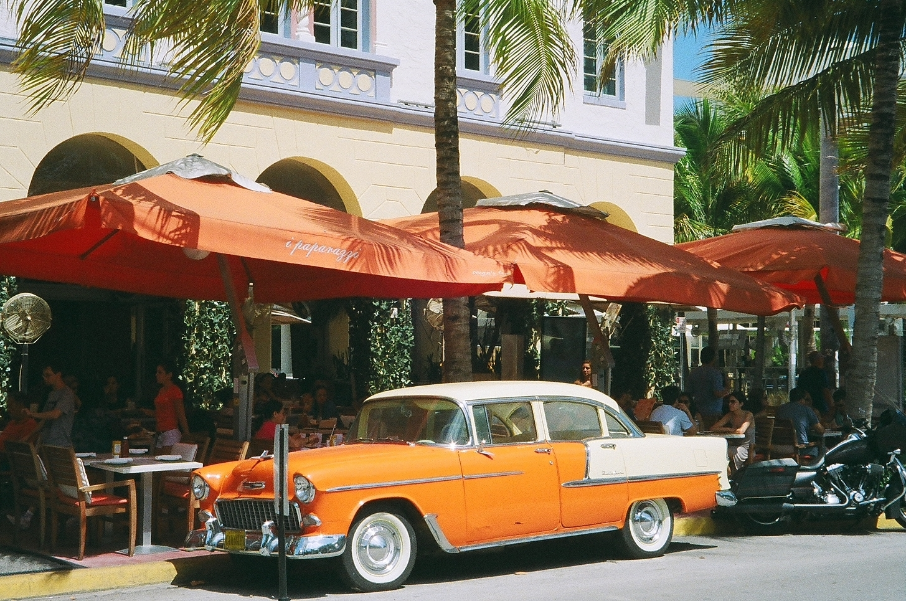
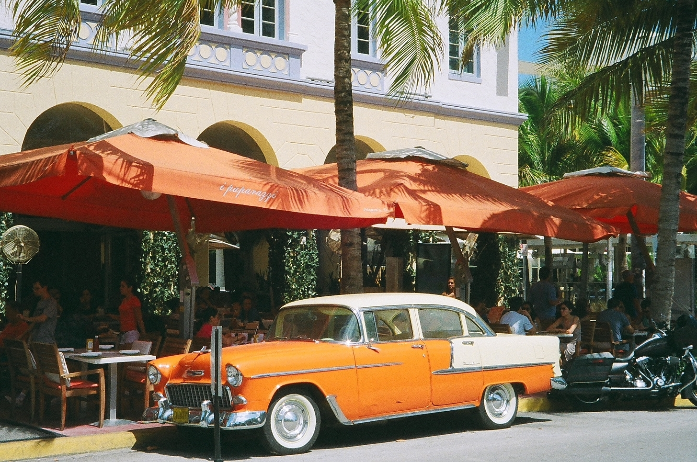
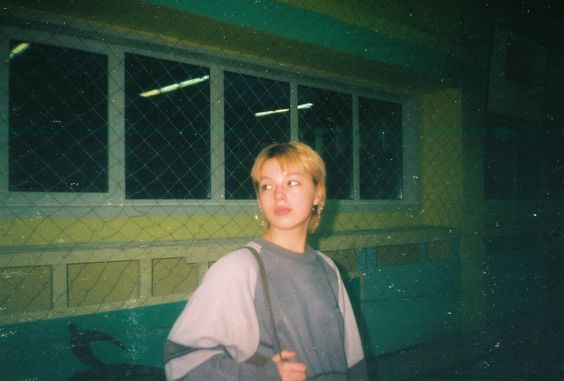
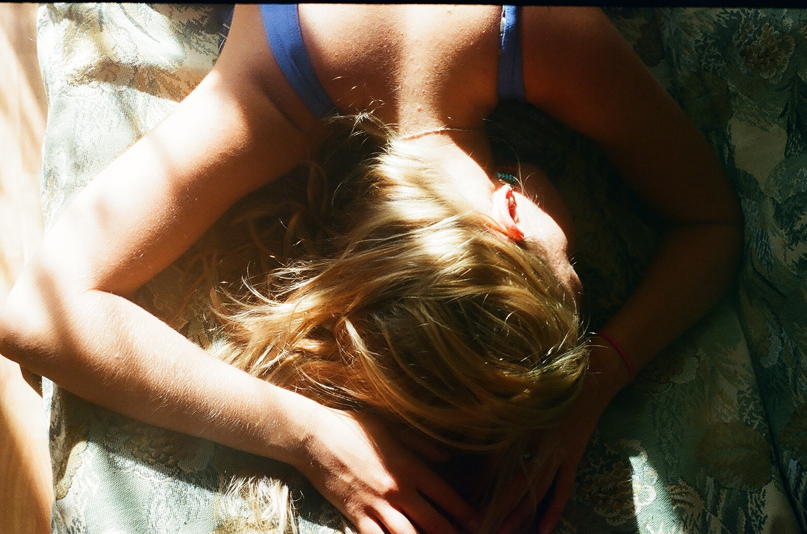

Выбираем плёночный фотоаппарат под наши задачи
Плёночные мыльницы
Их можно купить на Авито, БУ от 500 рублей за штуку. Не важно, что написано на камере, они все одинаковые,
кроме одного нюанса, есть:
-
одноразовые фотики - на первый взгляд, фотоаппараты выглядят игрушечными, они очень легкие и имеют яркую
расцветку. Сложно поверить, что ими вообще можно снимать.
У одноразовых фотоаппаратов есть неоспоримое
преимущество - они всегда готовы к работе! Поскольку конструкция камер довольно примитивна, в них отсутствует
защитная крышка объектива и кнопка включения, можно не теряя времени сделать кадр, быстро вынув камеру из
кармана. Но есть и ряд минусов, например, линза в окошке видоискателя сильно искажает картинку, особенно это
заметно при съемке портретов. Похоже на кривое зеркало в комнате смеха, если кто-то понимает, о чем речь!
-
перезаряжаемые - мыльницы, которыми пользуешься 24/7, 366/12, грубо говоря, всегда, при этом меняешь
только фотоплёнку!
Преимущества
- как правило, в рабочем состоянии;
- условно бесплатные;
- полностью автоматическая, думать вообще не требуется - навёл и снял
Минусы
- темная оптика;
- условный автофокус (от 1 метра до ∞), который, на самом деле, совсем не автофокус, а сплошное мыло на фотографиях;
- нет возможности установить руками хоть что-нибудь: коррекцию экспозиции, экспозицию, диафрагму,
выдержку, чувствительность плёнки - один сплошной автомат
- cносные фотографии получаются на солнце, в яркую погоду. В тени и пасмурную погоду гораздо хуже.
Ночью - драматически худо, несмотря на встроенную вспышку. Вспышка только портит фотографии
Примеры фотографий
 

Таких фотоаппаратов много. Kanon, Nikon, Fuji, Leica и другие, они все фотографируют +- одинаково
Преимущества
- светосильная оптика гораздо лучшего качества, чем в мыльницах;
- у некоторых моделей есть мануальные установки, коррекция экспозиции;
- удобные формат: полноформатная камера в кармане;
- автофокус
Минусы
- завышенная цена, которая надута искусственно;
- лотерея при покупке, может быть порван какой-то шлейф, потечь ЖК-дисплей или не работать кнопка,
а ремонт не во всех городах и дорогое удовольствие;
- оптика отнюдь не топовая, мылит;
- это любительская фототехника
Можно фотографировать на солнце и в тени. В сумерках нужно знать предел своей оптики и желательно иметь
мануальный режим со штативом.
Честно говоря, я не понимаю зачем их покупают. Olympus mju II стоит сегодня
от 15000 рублей в сносном состоянии. А за проверенные экземпляры просят 50000 и даже больше. За такие деньги
можно взять топовую плёночную зеркалку с люксовым объективом.
Примеры фотографий


Названия: Смена, ФЭД, Зоркий, Зенит, Киев
Преимущества
- недорогие (уже не точно, ибо цены растут);
- сменная стеклянная светосильная оптика в металлических корпусах с разными фокусными расстояниями;
- можно крутить выдержку, диафрагму, чувствительность, вводить коррекцию экспозиции, фокусироваться
Минусы
- тяжёлые и громоздкие;
- экспономентр, как правило, врёт или умер;
- шторки затвора часто светят, мастеров по ремонту мало;
- видоискатели - не предел мечтаний (есть исключения);
- за давностью лет почти все — хлам, требуют чистки (обслуживания), выдержки на механике сильно врут
С такой техникой уже можно говорить, что вы фотограф. Снимайте на солнце, в тени, ночью со штатива, со вспышками.
Всё получается, всё по взрослому.
Требуют определённых знаний (выставлять ручные установки). Хорошо бы
знать в какую сторону врёт экспозиция и на сколько. Чаще всего это выясняется экспериментально.
В 1999 моя мама
начала снимать на Зенит-122. Тогда это была свежая модель в идеальном состоянии и он делал прекрасные снимки.
Сегодня такой уже не возьму, потому что время превращает советскую фототехнику в тыкву. Общаясь со многими
фотографами, сидящими на ФЭД и Зенит, я ппоняла, что это не особо выгодно, к тому же немного запарно.
Примеры фотографий

Плёночные зеркалки
Это высший пилотаж, самая передовая плёночная фототехника и мой любимый инструмент. Развитие
плёночных фотоаппаратов остановилось на этом классе устройств и лучше ничего больше не придумали.
За исключение Leica, о которой чуть дальше
Плёночные зеркалки почти не отличаются внешне от цифровых зеркальных фотоаппаратов.
Многое из плёночных зеркалок перекочевало в цифру
Преимущества
- идеальный экспозамер;
- идеальная экспозиция;
- режимы съёмки от полностью автоматического до полностью мануального;
- прекрасные видоискатели;
- современная автофокусная оптика, которую можно взять с цифрового фотоаппарата;
- есть вполне компактные экземпляры;
- гуманная цена (иногда дешевле советского железа, которое им в подмётки не годится);
Минусы
- не дают ощущения съёмки на плёнку, для кого-то это минус;
- зеркальные пленочные фотоаппараты имеют такой же размер, что и их цифровые собратья;
- сравнительно дорогая профессиональная оптика (ведь она современная).
Эти фотоаппараты снимают идеально. Я не преувеличиваю! Никакой другой фотоаппарат не снимет лучше
"современной" плёночной зеркалки. Я говорю "современной", потому что их сняли с производства не так давно.
Например, Nikon F6 продавался у дилеров до 2017-го года.
Зеркальные плёночные фотоаппараты бывают профессиональными и любительскими. С кучей промежуточных
моделей. Я считаю, что даже самая простецкая плёночная зеркалка уровня Canon EOS 3000 экспонирует плёнку
качественнее, чем отвлечённый Nikon F3 (легендарный топовый механический фотоаппарат). При этом полностью
электронный Canon удобнее, легче и намного дешевле F3. И к нему подходят все EF-объективы, рисуйте имеющейся
оптикой на здоровье!
Именно на базе Canon EOS 3000v я собралa самый компактный электронный плёночный сетап, который вообще
сейчас возможен. У меня 2 таких фотоаппарата, постоянно заряженных разной плёнкой.
Единственный минус
этих безупречных плёночных инструментов: вы не почувствуете, что снимаете на плёнку. Зато никаких ограничений:
снимайте что угодно, вплоть до самых динамичных сцен (репортаж, свадьба, дети, животные, спорт), если вам
позволяет чувствительность плёнки!
Качество и рисунок ваших фотографий в случае с электронной зеркалкой
определяет только объектив. Экспозиция, настройки, точность выдержек фотоаппарат берёт на себя и делает
своё дело превосходно, насколько это вообще возможно.
Примеры фотографий